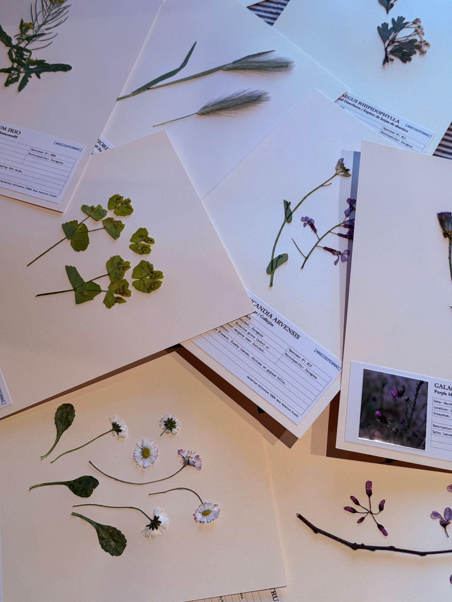

Ethnobotanical documentation · with communities, not about them
The knowledge belongs to the people who kept it.
I am an ethnobotanist. Universities, herbaria and community organisations hire me to document traditional plant knowledge with the people who hold it — recorded under their consent, archived in their language, and returned to them before anyone else reads a page.
A record is not a remedy. Documentation writes down what a community knows and uses. It does not test it, prove it or sell it: this practice makes no health claims, and no plant material ever changes hands here.
- Documentation programmes completed
- 14
- Use-reports recorded, with consent
- 2,860
- Voucher specimens pressed & deposited
- 412
- Archives returned in the community's language
- 11
- Programmes paused so consent could take longer
- 2
- Remedies sold, in fourteen programmes
- 0
The practice's own record to the end of the 2025 season. The last two lines are counted on purpose: a pause for consent is fieldwork done properly, and the zero is the point of the whole practice.

The consensus calculator
Ethnobotany has a standard way to ask how far a community agrees with itself: the informant consensus factor, published by Trotter & Logan in 1986 and used in field studies ever since. For one category of use — winter coughs, say — you count the use-reports and the plants they name, and the arithmetic does the rest. Try it with the steppers; the working is printed as it changes, the way it would be on a determination label.
ICF = (Nur − Nt) ÷ (Nur − 1)
Nur — use-reports in the category: every recorded statement, from a consenting holder, of a plant used for that purpose. Nt — taxa used: how many different plants those reports name between them. The factor runs from 0 (every report names a different plant) to 1 (every report names the same few).
Nt is held at Nur. A category cannot name more taxa than it has use-reports — if every report named a different plant, Nt would equal Nur and the factor would read 0.000.
Strong agreement. The reports gather on very few taxa — the classic signature of a category a community treats as settled knowledge, held in common.
Read it honestly: the factor measures agreement between informants — nothing else. A high value is not evidence that a plant works, and a low one is not evidence that knowledge is wrong. It shows where a community speaks with one voice, which is where careful documentation starts.
A worked example, from a real programme's shape
In the winter-coughs category of the highland programme in the Programme Log (Plate I), 31 holders gave 64 use-reports naming 11 taxa between them:
Nur − Nt = 64 − 11 = 53 · Nur − 1 = 64 − 1 = 63 · ICF = 53 ÷ 63 = 0.841
Clear, strong agreement — and still only agreement. Whether any of those eleven plants eases a cough is a question for a pharmacology laboratory. It is not a question this record asks, and it is never one this record answers.
What can be commissioned
Six services, each with the client it is usually commissioned by and its present status. Community organisations are never queued behind institutions for the archive work — the register is ordered by the work, not by the size of the client.
| Service | Commissioned by | Basis | Status |
|---|---|---|---|
| Documentation programme design & fieldwork | Universities · community organisations · research consortia | Per programme, fitted to the season | Booking |
| Recording & transcription management | Research groups · universities | Per audio-hour, in the record's own language | Open |
| Archive build & return | Community organisations first · then institutions | Fixed per archive, agreed before fieldwork | Open |
| Voucher collection & herbarium deposit | Herbaria · universities | Per field season, specimens included | Waitlist |
| Training for community researchers | Community organisations · NGOs | Per course of four to six sessions | Open |
| Legacy collection & record audit | Herbaria · museums | Per collection, however it was kept | Waitlist |
The fee shape, printed
No rate hides behind a phone call. These are the figures programmes are actually costed from — including the line most budgets try to wish away: the community liaison is a paid colleague from the community itself, at a professional rate, on every day of fieldwork. The estimator below uses these rates unchanged.
- Fieldwork dayEthnobotanist on site — recording, collecting, pressing
- €420
- Community liaison dayA paid colleague from the community — never a volunteer, never unpaid “access”
- €260
- Transcription & translationPer audio-hour, by transcribers working in the record's language
- €95
- Archive build & returnCommunity copy delivered first; the institutional copy is licensed, not sold
- from €1,800
- Voucher processingPressing, mounting, determination labels, herbarium deposit — per specimen
- €14
What moves the price
- Season. Plants fruit when they fruit, and holders have harvests of their own to work. A programme fitted to the wrong season costs a second season.
- Language work. Every language in the record is transcribed and checked in that language. A second language roughly doubles the transcription line — and is never skipped to save money.
- Archive requirements. Print, audio and digital returns cost more than digital alone, and they are worth it: paper survives where servers and file formats do not.
Archive build & return — choose the return
An estimate of shape, not a quote. The consent process sets the real calendar — how many visits, in which season, at whose pace — and the calendar sets the final figure. If consent takes longer, the liaison line grows and the fieldwork line waits; that is the correct order of events, and the bill says so.
How a programme runs
Five stages, always in this order. The first one decides whether the other four happen at all. The full method — and the ethics it answers to — is set out on The Botanist sheet.
- Stage 1
Consent before recorders
Written and recorded consent, per person, per session — revocable at any time, including afterwards.
- Stage 2
Recording with holders
Sessions with the people who hold the knowledge. Use-reports logged by category, in their words first.
- Stage 3
Vouchers & verification
Specimens collected with permission, pressed and numbered. A plant name without a voucher is an opinion.
- Stage 4
Transcription & translation
Paid transcribers from the community; holders review their own transcripts before anything is filed.
- Stage 5
Return of the archive
The complete archive goes to the community first. Institutional copies are licensed copies — never the original, never the only one.
From the programme the archive came home first
“The archive came back to us before the university saw its copy — in our language, on paper, with the recordings. That order was written into the contract, and it was kept. When our young people add to it now, they are adding to something that is ours.”
The arrangement she describes is the standard one here, not a favour: the community's complete archive — print, audio and digital — is delivered and receipted before the commissioning institution receives its licensed copy. Read the programme in full, including what it cost and what it declined to record.
Have knowledge that deserves a proper record?
The first conversation costs nothing and commits nobody — least of all the community whose knowledge it is.